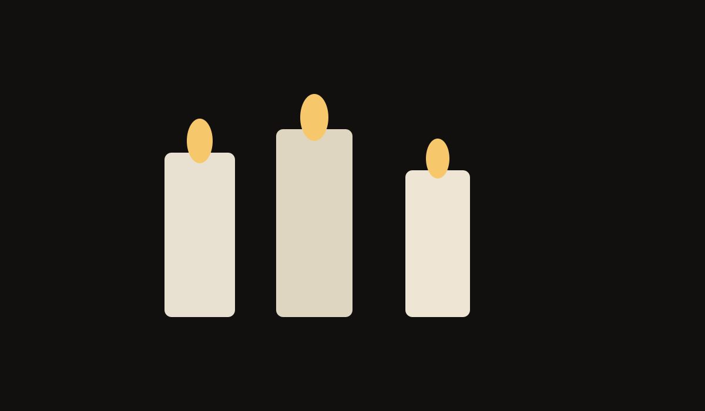

Luz e atmosfera
8 outubro 2026

Uma iluminação suave pode tornar qualquer ambiente mais acolhedor e intimista.
Combinar velas, luminárias quentes e sombras naturais é uma ótima forma de criar atmosfera.
8 outubro 2026

Uma iluminação suave pode tornar qualquer ambiente mais acolhedor e intimista.
Combinar velas, luminárias quentes e sombras naturais é uma ótima forma de criar atmosfera.